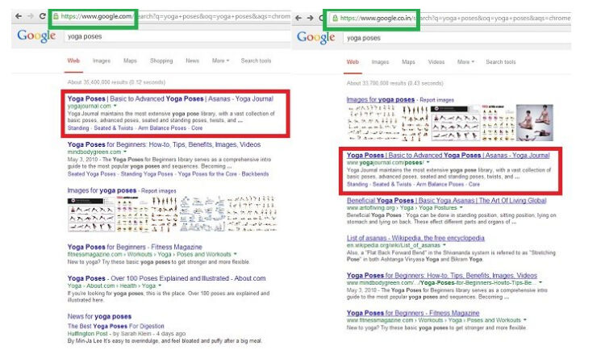

Trainees Edition
Trainers Edition
Trainees Edition
Trainers Edition
6.nodarbība: algoritmu laikmets
Nodarbības saturs
Šīs nodarbības galvenais mērķis ir izprast algoritmus, to darbību, kā tie ietekmē cilvēkus un sabiedrību, kā arī priekšrocības un sekas automatizētai lēmumu pieņemšanai.
Nodarbības sekundārais mērķis ir sniegt vadlīnijas pasniedzējiem, kuri vēlas izmantot nodarbības saturu, lai mācītu savus studentus.
Šie mērķi palīdz izprast kā darbojas algoritmi, to iespējamā ietekme uz cilvēkiem, sabiedrību un ikdienas dzīvi, kāpēc tie jālieto piesardzīgi. Nodarbībā sniegtas vadlīnijas kā mācīt šo priekšmetu.
Studenti, kuri būs sekmīgi pabeiguši šo nodarbību spēs izprast:
- algoritmus un kā tie darbojas
- kā algoritmi ietekmē cilvēkus un sabiedrību
- algoritmu plusus un mīnusus
- saistību starp algoritmiem, ziņām un ziņu plūsmām
- filtru burbuļus un atbalss kameras
Papildus tam pasniedzēji, kuri būs sekmīgi apguvuši šo nodarbību, iegūs izpratni par to, kā nodot tālāk zināšanas par šo tēmu.
Nodarbības struktūra
Nodarbība sastāv no šādām daļām:
- nodarbības apraksts (mērķi, satura izklāsts un mācību rezultāti),
- nodarbības struktūra,
- vadlīnijas studentiem,
- vadlīnijas pasniedzējiem (kā sagatavoties, izmantojamās metodes, ieteikumi),
- saturs (mācību materiāli),
- tests,
- informācijas resursi (izmantotie avoti, ieteicamie avoti un video).
Galvenie nodarbības mērķi, satura izklāsts un mācību rezultāti ir raksturoti nodarbības apraksta daļā. Saturs ietver visus mācību materiālus. Tests sastāv no jautājumiem ar atbilžu variantiem un apgalvojumiem, par kuriem jāatzīmē, vai tie ir patiesi vai aplami, tas palīdzēs novērtēt studenta sekmes. Informācijas resursi ir dalīti divās sadaļās – izmantotie avoti un ieteicamie avoti tālākai pētniecībai. Izmantotie avoti ir to materiālu saraksts, kas citēti mācību materiālā. Ieteicamie avoti satur papildu informācijas avotus un video, kurus būtu ieteicams izlasīt un noskatīties, lai labāk izprastu tēmu. Vadlīnijas studentiem iekļauj instrukcijas un ieteikumus studentiem. Vadlīnijas pasniedzējiem palīdz pasniedzējiem dažādās mācību procesa fāzēs un sniedz noderīgus ieteikumus.
Vadlīnijas studentiem
Nepieciešams izlasīt tekstu un noskatīties ieteikto video. Ieteicamie informācijas avoti var palīdzēt labāk izprast tēmu. Pēc mācību materiāla apgūšanas vēlams izpildīt testu, lai novērtētu savas sekmes. Ja nepieciešams, mācību materiālu var pārskatīt atkārtoti.
Vadlīnijas pasniedzējiem
Vadlīnijas pasniedzējiem ietver padomus un ieteikumus, kā pasniegt studentiem informāciju par algoritmiem, to potenciālu ietekmēt cilvēkus, viņu lēmumus un sabiedrību.
Sagatavošanās
Sagatavot prezentāciju (PowerPoint/Prezi/Canva) par nodarbības tēmu, kas papildināta ar vizuāliem materiāliem, par dažādu cilvēku un dažādās vietās dzīvojošu cilvēku meklēšanas rezultātiem meklētājprogrammās (search engine). Iespējama arī reāla demonstrācija meklētājprogrammā.
Darba uzsākšana
Īss tests (3-5 jautājumi), izmantojot platformu Kahoot vai Mentimeter, lai iesaistītu studentus vai pārbaudītu esošās zināšanas.
Izmantojamās metodes
Mācību procesā var izmantot dažādas metodes, piemēram:
- lekcija,
- diskusija,
- darbs grupās,
- pašrefleksija.
Padomi pasniedzējiem
Iesildīšanās
Lai efektīvi iesaistītu dalībniekus mācību procesā un vienotos par to, kas tiks apgūts nodarbības laikā, tās sākumā var uzdot iesildošus jautājumus par nodarbības tematu. Organizēt grupu darbu, lūdzot studentiem diskutēt un apkopot idejas, kā arī katram dalībniekam uzrakstīt savas idejas uz līmlapiņas.
Nodarbības gaita. Pajautāt studentiem:
- ko viņi domā par algoritmiem viņu ikdienas dzīvē,
- klasificēt piemērus un izveidot sarakstu ar vietām, notikumiem kurus ņem vērā algoritmi,
- vai algoritmiem ir saistība ar to kāda veida ziņas mēs saņemam,
- kas nosaka un pieņem lēmumus algoritmu izveidē.
Pēc diskusijas pārliecinieties, ka studenti izprot algoritmu ietekmi ikdienas dzīvē, algoritmu veidošanas principus un iespēju ar tiem manipulēt.
Nodarbības mērķa paskaidrošana
Nodarbības mērķim jābūt skaidram: izprast algoritmus, to ietekmi uz mūsu ikdienu un potenciālu ar tiem manipulēt. Pēc iesildošajiem jautājumiem būs vieglāk izskaidrot nodarbības mērķus.
Nodarbības satura izklāsts
Iepazīstinot ar nodarbības saturu, pārliecinieties, ka mijiedarbojieties ar studentiem un iedrošiniet viņus aktīvi iesaistīties:
- pirms algoritma definīcijas sniegšanas palūdziet studentus to definēt, precizējot tā funkcijas,
- pirms sniegt pārskatu par algoritmu priekšrocībām un iespējamiem riskiem, palūdziet dalībniekiem par to sīkāk izstāstīt,
- stāstot par meklējumprogrammu dažādiem meklēšanas rezultātiem atkarībā no cilvēka vai atrašanās vietas izmantojiet ekrānšāviņus vai demonstrējiet reālus piemērus,
- Ja laiks un iespējas atļauj, palūdziet studentus veikt vienādus informācijas meklējumus un salīdzināt rezultātus,
- izskaidrojiet algoritmu un ziņu/ziņu plūsmu savstarpējo saistību,
- pēc visaptveroša algoritmu, filtru burbuļu un atbalss kameru pārskata pabeigšanas lūdziet dalībniekus sīkāk izskaidrot algoritmu lomu misinformācijas izplatīšanā.
Noslēgums
Sniedziet nodarbības kopsavilkumu un uzdodiet dažus jautājumus, kas palīdzētu izcelt būtiskāko satura izklāstā:
- pajautājiet studentiem, vai izprotot algoritmus ir iespējams kontrolēt informāciju kuru viņi saņem,
- vai uztveres mehānismu apzināšanās ietekmē misinformācijas uztveri un spēju kontrolēt to.
Pēc diskusijām pārliecinieties, ka studenti saprot, ka algoritmi mūsu vietā pieņem lēmumus un tas veido iespēju manipulācijai ar informāciju.
Saturs: algoritmu laikmets
Ievads
Algoritmi ir instrukciju kopums, kuras izmanto datori apstrādājot datu masīvus, lai atrisinātu problēmu vai izpildītu uzdevumu (Head, Fister & MacMillan, 2020, lpp. 49). Algoritmu var uzskatīt par mini instrukciju, kas saka datoram, kā izpildīt doto uzdevumu vai manipulēt ar dotajiem datiem (What is an algorithm?, n.d.).
Algoritmi pārvalda saturu, piešķirot prioritāti, klasificējot, saistot un filtrējot informāciju. Prioritātes nosaka saturu, lai pievērstu uzmanību vienai lietai uz citas rēķina. Klasifikācija ietver noteiktas entītes iedalīšanu kategorijās kā noteiktas klases sastāvdaļu, aplūkojot jebkuru šīs entītes pazīmju skaitu. Asociācija iezīmē attiecības starp entītēm. Filtrēšana ietver noteiktas informācijas iekļaušanu vai izslēgšanu, pamatojoties uz kritēriju kopumu (Diakopoulos, 2013, lpp. 4-8).
Filtrēšanas algoritmi bieži ņem vērā prioritātes, klasifikāciju un asociācijas. Piemēram, ziņu personalizēšanas lietotnēs ziņas tiek filtrētas atbilstoši tam, kā šīs ziņas ir klasificētas, kā tās ir saistītas ar personas interesēm un kā tās ir noteiktas šai personai. Pamatojoties uz filtrēšanas lēmumiem, noteikta informācija tiek pārāk uzsvērta, bet cita tiek cenzēta (Diakopoulos, 2013, lpp. 4-8).
"Algoritmu laikmetam" ir bijusi liela ietekme uz sabiedrību, politiku un ziņām. Algoritmi ir spēcīgi, efektīvi un bieži vien apšaubāmi inovāciju un sociālo pārmaiņu virzītājspēki (Head, Fister & MacMillan, 2020, lpp. 4). Mūsdienās tiek izstrādāti arvien sarežģītāki algoritmi, lai palīdzētu un dažreiz pilnībā aizstātu cilvēka iejaukšanos lēmumu pieņemšanas uzdevumos. Šķiet, ka algoritmi salīdzinot ar cilvēka pūliņiem to dara par zemākām izmaksām un ar augstāku efektivitāti (O’Neil, 2016). Iespējamie ieguvumi no automatizētas lēmumu pieņemšanas ir neskaitāmi un skaidri, un tajā pašā laikā ar to saistīti dažādi riski un bažas (Olhede & Wolfe, 2019, lpp. 2).
Datu lielapjoma pieejamība kopā ar straujo algoritmu tehnoloģisko attīstību būtiski maina sabiedrību (Olhede & Wolfe, 2019, lpp. 2). Ikdienas dzīvē algoritmi bieži tiek izmantoti, lai ietekmētu cilvēka lēmumus par to, ko skatīties un ko pirkt (Head, Fister & MacMillan, 2020, lpp. 5) un pat par ko balsot (Epstein & Robertson, 2015). Algoritmi filtrē meklēšanas rezultātus meklētājprogrammās. Tie var būt ieprogrammēti, lai izlemtu, kurš tiek uzaicināts uz darba interviju un arī to kurš saņem darba piedāvājumu. Tos var izmantot, lai pārvaldītu sociālos pakalpojumus, piemēram, labklājību un sabiedrisko drošību. Tie var ietekmēt, kuriem aizdevuma pieprasītājiem ir labs kredītrisks. Šīs neredzamās koda rindas var noteikt medicīnisko diagnozi un pat soda izciešanas ilgumu (Head, Fister & MacMillan, 2020, lpp. 4-5).
Algoritmi pieņem ietekmīgus lēmumus, kas var un paplašina uzņēmumu un valdību spēku (Diakopoulos, 2013, lpp. 29). Pieņemot lēmumus, algoritmi var veicināt politisko, ekonomisko, ģeogrāfisko, rasu vai citu diskrimināciju, piemēram, veselības aprūpē, kredītrisku vērtēšanā un akciju tirdzniecībā (Pasquale, 2011).
Algoritmi ietekmē lietotāju pieredzi un pat pasaules uztveri (Diakopoulos, 2013, lpp. 3). Neskatoties uz to, ka algoritmu darbība dažkārt var izraisīt netaisnību un veidot cilvēku uztveri un ietekmēt viņu izvēli, cilvēki bieži vien neapzinās algoritmu klātbūtni, jo tie ir neredzami.
Algoritmi ne vienmēr ir kaitīgi cilvēkiem, tie var darboties arī kā pozitīvs spēks (Diakopoulos, 2013, lpp. 2). Algoritmi patiesībā nav labi vai slikti. To ietekme drīzāk ir atkarīga no tā, kā tie ir ieprogrammēti, kurš veic programmēšanu, kā algoritmi darbojas praksē, kā lietotāji ar tiem mijiedarbojas un kas tiek darīts ar milzīgo persou datu apjomu, kuru tie saņem (Head, Fister & MacMillan, 2020, lpp. 4). Tomēr ir svarīgi atzīt, ka algoritmi ir neobjektīvi un tie var kļūdīties. Problēma saistīta ar skaidrības trūkums par to, kā algoritmi izmanto savu varu pār cilvēkiem. Algoritmiskie kodi ir necaurspīdīgi un paslēpti aiz tehniskās sarežģītības slāņiem (Diakopoulos, 2013, lpp. 2).
To ietekme ir svarīga (Barocas, Hood & Ziewitz, 2013; Hamilton, Karahalios, Sandvig & Eslami, 2014; Sandvig, Hamilton, Karahalios & Langbort, 2014). Piemēram, meklēšanas algoritmi strukturē sabiedrībai pieejamo tiešsaistes informāciju un var darboties kā vārteja (Granka, 2010, lpp. 364-365; Introna & Nissenbaum, 2000). Tīmekļa meklētājprogrammu meklēšanas rezultātiem ir liela ietekme uz veidu, kā katrs lietotājs to redz tīmekli (Xing, Meng, Doozan, Feamster, Lee & Snoeren, 2014). Pētnieki pārbaudīja personalizēto meklēšanas rezultātu ietekmi uz Google un atklāja, ka rezultāti atšķiras atkarībā no vairākiem faktoriem, piemēram, tīmekļa satura jebkurā laikā, reģiona, no kura tiek veikta meklēšana, nesenās meklēšanas vēstures un meklētājprogrammu manipulāciju daudzuma noteiktu rezultātu atrašanai (Xing , Meng, Doozan, Feamster, Lee & Snoeren, 2014).

Avots: Gohel, 2013
Pētījumi rāda, ka meklētājprogrammu meklēšanas rezultātu klasifikācijām ir dramatiska ietekme uz patērētāju attieksmi, vēlmēm un uzvedību. Interneta meklēšanas klasifikācijai ir būtiska ietekme uz patērētāju izvēli, galvenokārt tāpēc, ka lietotāji vairāk uzticas un izvēlas augstāka ranga rezultātus nekā zemāka ranga rezultātus. Ņemot vērā meklēšanas rangu acīmredzamo spēku, pētnieki pētīja, vai ar tiem var manipulēt, lai mainītu neizlēmušo vēlētāju izvēli demokrātiskās vēlēšanās. Rezultāti liecina, ka neobjektīva meklēšanas klasifikācija var mainīt neizlēmušo vēlētāju balsošanas izvēli par 20% vai vairāk, dažās demogrāfiskajās grupās nosvēršanās var būt daudz lielāka, un šādus reitingus var maskēt, tā lai cilvēki neapzinātos manipulāciju (Epstein & Robertson, 2015).
Pastāv plaši izplatīts nepareizs priekšstats par algoritmiem (kā matemātiskiem modeļiem) un to rezultātiem, kas ir godīgi un objektīvi (O’Neil, 2016). Tā kā algoritmus apstrādā datori un tie izpilda loģiskus norādījumus, cilvēki bieži tos uzskata par neitrāliem vai bez iekšējām vērtībām, taču lēmumi, ko pieņem cilvēki, izstrādājot un pielāgojot algoritmus un datus, uz kuriem tiek apmācīts algoritms, var radīt cilvēku neobjektivitāti (Head, Fister & MacMillan, 2020, lpp. 49). Algoritmi izmanto arī neveiksmīgas pilnvaras (poor proxies), lai saprastu cilvēka uzvedību un apkopotu datus. Neveiksmīgas pilnvaras izmantošana realitātes mērīšanai un grūti saprotamai realitātei bieži vien var būt diskriminējoša. Algoritmi pieņem lēmumus, nepaskaidrojot, kā tie pieņemti (O’Neil, 2016). Gluži pretēji notiek, ja cilvēks pieņem lēmumus, tajā gadījumā pastāv atgriezeniskās saites cilpa, kas ļauj labot kļūdas spriedumā (O’Neil, 2016). Turklāt algoritmi, ko sociālās vietnes izmanto satura reklamēšanai, nenovērtē satura vērtīgumu, tā izplatās un ir izplatījusies misinformācija (Jolly, 2014).
Noslēgumā var teikt, ka algoritmi ir šeit uz palikšanu, bet tie ir jāizmanto piesardzīgi (O’Neil, 2016).
Dzīve algoritmu laikmetā: kopaina
Informācijas pasaule pēdējo desmit gadu laikā ir pārvērtusies neparedzētā veidā. Šīs izmaiņas daļēji var izskaidrot ar algoritmu ietekmi. Daži no faktoriem, kas veicina šīs izmaiņas, palīdz mums redzēt kopainu, kuru apkopojis Head, Fister and MacMillan, (2020, lpp. 5-7):
Datu vākšana par mūsu ikdienu notiek nemanāmi un pastāvīgi.
- Datu zinātnes sasniegumi ļauj sistēmām savākt un apstrādāt datus reāllaikā, ātri un plašā mērogā (“lielie dati”).
- Dati, kas savākti no daudziem avotiem tiek ātri apstrādāti.
- Sociālajām institūcijām un procesiem tiek piemērotas automatizētas lēmumu pieņemšanas sistēmas, kas nosaka, kurš saņem darbu, hipotēku vai aizdevumu, sociālo pakalpojumu pieejamību, uzņemšanu skolā vai izglītības pakalpojumus.
- Mašīnmācība un mākslīgais intelekts, ko arvien vairāk izmanto programmatūras produktos, kas pieņem ļoti nozīmīgus lēmumus, bieži vien paļaujas uz neobjektīvām vai nepilnīgām datu kopām.
- Publicētās informācijas sadalīšana un tās tālāka izplatīšana, izmantojot meklēšanas un sociālo mediju platformas, apgrūtina agrāk nozīmīgu avotu (piemēram, zinātnisku rakstu, avīžu rakstu) novērtēšanu.
- Ienesīgās nozares apkopo datus no cilvēku mijiedarbības ar datoriem, lai personalizētu rezultātus, prognozētu un virzītu uzvedību, mērķtiecīgi reklamētu, ietekmētu politisko pārliecību un sociālo uzvedību plašā mērogā.
- Šīm nozarēm ir grūtības paredzēt viņu darbības sekas un attiecīgi reaģēt uz tām.
- Sociālo mediju platformu uzplaukums, kurām nav ētikas kodeksa, veicina neuzticēšanos iedibinātām zināšanu tradīcijām, piemēram, žurnālistikai, zinātnei un pētniecībai.
- Tehniskā infrastruktūra, kas ietekmē to, kā cilvēki iegūst informāciju un veido viņu zināšanas un uzskatus, sabiedrībai lielākoties ir neredzama.
- Sabiedrībai trūkst zināšanu par to, kam ir vara pār informācijas sistēmām, kā arī par to algoritmiem un kā šī vara tiek izmantota.
Līdz ar to izpratne par to, kā informācija darbojas algoritmu laikmetā, ir ārkārtīgi svarīga ikvienam (Head, Fister & MacMillan, 2020, lpp. 7-8).

Avots: Head, Fister & MacMillan, 2020, lpp. 6.
Ziņas, ziņu plūsmas un algoritmi
Algoritmus bieži izmanto ziņu filtrēšanai. Mūsdienās lasītāji arvien vairāk uzzina par jaunumiem, izmantojot sociālos medijus, e-pastu un dažādas lietotnes, tāpēc ziņu vietņu mājaslapu apmeklējums turpina kristies. Izdevēji to labi apzinās un ir attiecīgi pielāgojuši savu infrastruktūru, veidojot algoritmus, kas maina vietnes pieredzi atkarībā no tā, no kurienes lasītājs ienāk. Rezultātā cilvēki, visticamāk, tiešsaistē redz dažādas laikrakstu pirmās lapas, jo tās ir pielāgotas konkrētām personām. Lai gan izdevēji uzskata, ka vietņu optimizēšana konkrētas tiešsaistes auditorijas lasīšanas un kopīgošanas izvēlēm ir laba lieta, jo tā ātri un efektīvi novirza lietotājus uz saturu, kas viņiem rūp, tomēr šāda veida rūpēšanās par lasītājiem nav laba (Jolly, 2014).
Ziņu plūsmas, kas sniedz lietotājiem bieži atjauninātas ziņas, ir vēl viena lietojumprogramma, kurā algoritmiem ir ievērojama loma. Piemēram, Facebook ziņu plūsma parāda algoritmiski atlasītu vai filtrētu stāstu sarakstu, kas atlasīts no visu stāstu kopas, ko izveidojis draugu tīkls (Eslami, Rickman, Vaccaro, Aleyasen, Vuong, Karahalios, Hamilton & Sandvig, 2015, lpp. 153). Pētījums kurā piedalījās Facebook lietotāji, pārbaudot viņu uztveri par Facebook ziņu plūsmas vadītajiem algoritmiem, izrādījās, ka vairāk nekā puse dalībnieku (62,5%) nemaz nezināja par ziņu plūsmas vadīto algoritma esamību. Viņi uzskatīja, ka katrs stāsts no viņu draugiem un lapām, kurām viņi seko, ir parādījies viņu ziņu plūsmā (Eslami, Rickman, Vaccaro, Aleyasen, Vuong, Karahalios, Hamilton & Sandvig, 2015, lpp. 153).

Algoritmi cilvēkiem atvieglo ne tikai viņus interesējošā satura atrašanu, bet arī satura atrašanu, kas, pēc algoritma domām, viņus interesē. Diakopoulos (2013, lpp. 2) apgalvo, ka mūsdienās algoritmi, ko virza milzīgs datu daudzums, ir jauni varas starpnieki sabiedrībā.
Filtru burbuļi
Filtra burbulis ir intelektuālā izolācija, kas rodas personalizējot informāciju, tas atvieglo izvairīšanos no saskares ar informāciju, kas ir pretrunā ar iepriekšējām zināšanām un viedokļiem. Filtru burbulis ir lietotāja saistītās informācijas (piemēram, pārlūkošanas un meklēšanas vēstures, atrašanās vietas, kā arī sociālo mediju plūsmu) apkopošanas rezultāts. Sociālie mediji var viegli iekapsulēt lietotājus filtru burbuļos ar to izmantotajiem algoritmiem. Lai gan filtru burbuļi ieskauj lietotājus ar līdzīgi domājošiem cilvēkiem, kuri izplata informāciju, kas atbilst viņu esošajiem uzskatiem un viedokļiem, tie neveicina kontaktu ar cilvēkiem, kuriem ir pretrunīgi viedokļi. Personalizētie meklēšanas rezultāti no Google un personalizētās ziņu straumes no Facebook ir divi šīs parādības piemēri (Filter bubble, 2018; Cooke, 2018).
Pēc Parisera teiktā, kurš radīja šo terminu, filtra burbulis ir pasaule, kas izveidota, pārejot no zinošu cilvēku (“human gatekeepers”), piemēram, laikrakstu redaktoriem, kuri nosaka svarīgumu pēc tā, kas veido galveno lapu, uz algoritmiskajiem, ko izmanto Facebook un Google, kas piedāvā saturs, uz kura, viņuprāt, lietotājs, visticamāk, noklikšķinās (Fitts, n.d.). Tehnoloģiju uzņēmumi ir komerciālas struktūras, un tāpēc, lai to akcionāri būtu apmierināti, ir jāmudina lietotāji palikt viņu vietnē pēc iespējas ilgāk, lai palielinātu reklāmu ekspozīciju skaitu. Viņi to dara, pielāgojot algoritmus, lai sniegtu vairāk to, kas lietotājam ir iepriekš paticis, ar ko tas dalījies vai komentējis (Wardle & Derakhshan, 2017, lpp.52). Šis jaunais digitālais visums ir “omulīga vieta, ko apdzīvo lietotāja iecienītākie cilvēki, lietas un idejas” (Fitts, n.d.). Tomēr šī selektīvā informācijas atklāšana rada bažas ne tikai tās kognitīvo aspektu, bet arī morālo, politisko un sociālo aspektu dēļ (Cisek & Krakowska, 2018).

{kind=link}
Nav šaubu, ka personalizēšana palīdz cīnīties ar informācijas haosu un informācijas pārslodzi, atvieglojot piekļuvi atbilstošai, noderīgai informācijai un izvairoties no pārējās (nesakarīgas, nederīgas, kaitinošas utt.). Tomēr pastāv būtiska atšķirība starp paša izvēlētu personalizāciju un iepriekš atlasītu personalizāciju. Iepriekš atlasītas personalizācijas algoritmi izvēlas saturu lietotājiem, savukārt pašizvēlētā personalizācijā cilvēki izvēlas un izlemj, kuru saturu viņi vēlas redzēt. Tas nav nekas jauns. Cilvēki vienmēr (un joprojām) dzīvo filtru burbuļos, jo vienmēr ir bijuši un vēl ir informācijas “vārtsargi” (piemēram, vecāki, valdība, reliģija, sociālās grupas), tomēr pastāv nopietnas bažas, ja šie burbuļi ir neredzami un piespiedu kārtā. Ja cilvēki nezina, ka iegūtā informācija ir personalizēta, viņi var pieņemt, ka tā ir pilnīga un objektīva. Algoritmi kā “vārtsargi” (citiem vārdiem sakot, cenzūras mehānismi) var kavēt piekļuvi saturam, kā arī apziņu, ka ir arī citi viedokļi. Sliktākais, ka tie nav balstīti uz ētikas principiem (Cisek & Krakowska, 2018). Filtru vērtību nevar noliegt, tomēr potenciāls, kas tiem piemīt, atstājot cilvēkus aklus pret dažādām idejām vai notikumiem, ir diezgan satraucošs (Anderson, 2016).
Filtru burbuļu negatīvos aspektus ir apkopojis Cisek and Krakowska (2018): “Maldinoša un kļūdaina realitātes tēla, individuāla domāšanas modeļa veidošanās; noslēgtība ierobežotā, hermētiskā informācijas, viedokļu, uzskatu, pasaules uzskatu lokā, ierobežojot zināšanu apguvi; apstiprinājuma novirzes un kognitīvās novirzes veidošanās; intelektuālā un emocionālā slinkuma veidošanās”.
Filtru burbuļu plīšana ir iespējama, pirmkārt, apzinoties, ka filtru burbuļi pastāv, un pēc tam attīstot kritiskās domāšanas un ziņu pratības prasmes. Cisek and Krakowska (2018) iesaka, lai pārplēstu filtru burbuļus: aktīvi meklējiet informāciju, nevis pasīvi patērējiet to ko algoritmi piedāvā; izmantojot meklētājprogrammu lietojiet uzlabotās meklēšanas rīku priekšrocības (Būla operatori, komandas, frāze, izvērstā meklēšana utt.); dažādu meklētājprogrammu izmantošana un rezultātu salīdzināšana; izmantot meklētājprogrammas, kas neizseko lietotājus un nepersonalizē (piemēram DuckDuckGo, Qwant, StartPage); izmantot programmatūru, kas palīdz izkļūt no filtru burbuļiem (piemēram Escape Your Bubble, FleepFeed, Pop Your Bubble) un paturot prātā, ka pastāv arī “dziļais tīmeklis” (Deep Web).
Pēc Wardle and Derakhshan (2017) domām “filtru burbuļu galvenais izaicinājums ir mūsu domāšanas veida pārmācīšana” un mācīt cilvēkiem “meklēt alternatīvus viedokļus”. Jo, ja/kad mēs atzīstam, ka cilvēki meklē un patērē saturu daudzu iemeslu dēļ, ne tikai kļūstot informētiem, piemēram, sajūtot saikni ar līdzīgiem cilvēkiem vai piederību noteiktai identitātei, tas nozīmē, ka filtra burbuļu pārplēšana ir nepieciešama vairāk nekā tikai daudzveidīgas informācijas sniegšanai.
Atbalss kameras (Echo Chambers)
Atbalss kamera ziņu medijos ir metaforisks situācijas apraksts, kurā uzskatus pastiprina atkārtota komunikācija slēgtā sistēmā. Atbalss kamerā cilvēki saskaras ar informāciju, kas pastiprina viņu esošos vērtības un uzskatus. To var uzskatīt par neapzinātu apstiprinājuma tendenci, kas var palielināt politisko un sociālo polarizāciju un ekstrēmismu (Echo chamber, 2020).
Atbalss kameras un filtru burbuļi ir divi tuvi jēdzieni, kurus parasti lieto savstarpēji aizstājot. Tomēr "atbalss kamera attiecas uz vispārēju parādību, kurā indivīdi tiek pakļauti informācijai tikai no līdzīgi domājošiem indivīdiem, savukārt filtru burbuļi ir algoritmu rezultāts, kas izvēlas saturu, pamatojoties uz iepriekšējo tiešsaistes uzvedību". (Echo chamber, 2020). Citiem vārdiem sakot, filtru burbuļi veicina atbalss kameru veidošanos, kam noteikti ir politiskas un sociālas sekas.

"labības apļu atbalss" autors oddsock licencēts saskaņā ar CC BY 2.0
Atbalss kameras nodrošina drošu telpu pārliecības un pasaules uzskatu apmaiņai ar citiem, nebaidoties no konfrontācijas vai šķelšanās (Wardle & Derakhshan, 2017). Atbalss kamerās aģenti veido dezinformācijas mērķgrupas, "kurās visticamāk uztvers vēstījumu", un nebūs "neviena, kas apstrīdētu idejas. Ļoti iespējams, ka ziņu pēc tam kopīgos sākotnējais adresāts” (Wardle & Derakhshan, 2017). "Kā liecina pētījumi, cilvēki daudz vairāk uzticas ziņai, kas nāk no viņiem pazīstama cilvēka" (Metzger, Flanagin & Medders, 2010). Tāpēc dezinformācija var tikt ātri izplatīties. Tā ceļo pa līdzīgiem (peer-to-peer) tīkliem, kur uzticēšanās mēdz būt augsta. Galvenā problēma ir tā, ka filtru burbuļi pasliktina polarizāciju, ļaujot cilvēkiem dzīvot savā tiešsaistes atbalss kamerā un atstājot viņiem tikai viedokļus, kas apstiprina, nevis apstrīd viņu pašu idejas (Wardle & Derakhshan, 2017).
Centrālās Vašingtonas universitātes pētnieki 2012. gada pētījumā norādīja, ka atkārtošanas teorija slēpjas aiz abām parādībām, un tieši tā ļauj viltus ziņām pastāvēt. Psiholoģe Lina Hašere no Toronto universitātes apgalvo, ka "atkārtošana padara lietas šķietami ticamākas", "un efekts ir spēcīgāks, ja cilvēki ir noguruši vai apjukuši no citas informācijas" (Dreyfuss, 2017).
Vingrinājumi
1.vingrinājums
2.vingrinājums
Tests
Izmantotie avoti
Anderson, T. (2016). Is Google Scholar a filter bubble?
Barocas, S., Hood, S., & Ziewitz, M. (2013). Governing algorithms: A provocation piece. In Governing Algorithms: A Conference on Computation, Automation, and Control.
Cisek, S. & Krakowska, M. (2018). The filter bubble: a perspective for information behaviour research. Paper presented at ISIC 2018 Conference.
Cooke, N. (2018). Fake news and alternative facts: Information literacy in a post-truth era. ALA.
Diakopoulos, N. (2013). Algorithmic Accountability Reporting: On the Investigation of Black Boxes. Tow Center for Digital Journalism.
Dreyfuss, E. (2017). Want to make a lie seem true? Say it again. And again. And again. Wired.
Echo chamber (media). (2020). In Wikipedia.
Epstein, R. & Robertson, R. E. (2015). The search engine manipulation effect (SEME) and its possible impact on the outcomes of elections. In: Proceedings of the National Academy of Sciences 112 (33), E4512-E4521.
Eslami, M., Rickman, A.,Vaccaro, K., Aleyasen, A.,Vuong, A., Karahalios, K., Hamilton, K. & Sandvig, C. (2015). "I always assumed that I wasn't really that close to [her]": Reasoning about Invisible Algorithms in News Feeds. In: CHI '15: Proceedings of the 33rd Annual ACM Conference on Human Factors in Computing Systems (pp. 153–162).
Filter bubble. (2018). In Technopedia.
Fitts, A. S. (n.d.). The king of content: How Upworthy aims to alter the Web, and could end up altering the world. Columbia Journalism Review.
Gohel, J. (2013). Google shows different UI in India and US.
Granka, L. A. (2010). The Politics of Search: A Decade Retrospective. The Information Society, 26(5), 364–374.
Hamilton, K., Karahalios, K., Sandvig, C., & Eslami, M. (2014). A path to understanding the effects of algorithm awareness. In Proc. CHI EA 2014, ACM Press (2014), 631–642.
Head, A.J., Fister, B. & MacMillan, M. (2020). Information literacy in the age of algorithms: Student experiences with news and information, and the need for change. Project Information Research Institute.
Introna, L., & Nissenbaum, H. (2000). Shaping the Web: Why the Politics of Search Engines Matters. The Information Society, 16 (3), 169-185.
Jolly, J. (20 May 2014). How algorithms decide the news you see: Past clicks affect future ones. Columbia Journalism Review.
Khorev, M. (2016). Why do different browsers and devices show different search results on Google?
Metzger, M.J., Flanagin, A.J. & Medders, R.B. (2010) Social and Heuristic Approaches to Credibility Evaluation Online. Journal of Communication, 60(3), 413-439.
O’Neil, C. (2016). Weapons of math destruction: How big data increases inequality and threatens democracy. Crown Publishers.
Olhede, S.C. & Wolfe, P. J. (2019). The growing ubiquity of algorithms in society: Implication, impact and innovation. Philosophical Transactions of the Royal Society, 376 (128).
Pariser, E. (2011). The Filter bubble: How the new personalized Web is changing what we read and how we think. Penguin Books.
Pasquale, F. A. (2011). Restoring Transparency to Automated Authority. Journal on Telecommunications and High Technology Law, 9(235).
Sandvig, C., Hamilton, K., Karahalios, K., and Langbort, C. (2014). Auditing algorithms: Research methods for detecting discrimination on internet platforms. In Data Discrimination: Converting Critical Concerns into Productive Inquiry.
Wardle, C. & Derakhshan (2017). Information disorder: Toward an interdisciplinary framework for research and policymaking. The Council of Europe.
What is an algorithm? An ‘in a nutshell’ explanation. (n.d.). Think Automation.
Xing X., Meng W., Doozan D., Feamster N., Lee W. & Snoeren A.C. (2014). Exposing Inconsistent Web Search Results with Bobble. In: Faloutsos M., Kuzmanovic A. (eds) Passive and Active Measurement. PAM 2014. Lecture Notes in Computer Science, vol 8362. Springer, Cham.
Ieteicamie avoti
Cooke, N. (2018). Fake news and alternative facts: Information literacy in a post-truth era. ALA.
Diakopoulos, N. (2013). Algorithmic Accountability Reporting: On the Investigation of Black Boxes. Tow Center for Digital Journalism.
Ieteicamie video
Khorev, M. (2017). Why are my search results different than others’ search results?
Praiser, E. (2018). How news feed algorithms superchange confirmation bias. Big Think.
GCFLearnFree.org. (2018). How filter bubbles isolate you.
GCFLearnFree.org. (2019). What is an echo chamber?